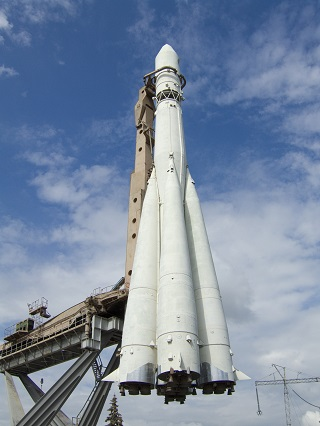

Космический аппарат «Восток-1»
12 апреля 1961 года в 9 часов 6 минут 59,7 секунд с космодрома Байконур стартовал первый космический корабль с человеком на борту «Восток-1». На борту корабля находился лётчик-космонавт Ю. А. Гагарин.
«Восток» (изд. 3КА) — наименование серии советских космических кораблей, предназначенных для пилотируемых полётов по околоземной орбите. Создавались ведущим проектировщиком К. П. Феоктистовым и ведущим конструктором О. Г. Ивановским под руководством генерального конструктора ОКБ-1 С. П. Королёва с 1958 по 1963 год.
Первый пилотируемый «Восток», запуск которого состоялся 12 апреля 1961 года, стал первым в мире космическим аппаратом, позволившим осуществить полёт человека в космическое пространство.
Начало работ
М. К. Тихонравов, работавший в ОКБ-1, начал работу по созданию пилотируемого космического корабля весной 1957 года. В апреле 1957 года был подготовлен план проектных исследований, предусматривающий, помимо прочего, создание пилотируемого корабля-спутника. В период с сентября 1957 по январь 1958 годов проводились исследования различных схем спускаемых аппаратов для возвращения с орбиты ИСЗ.
Всё это позволило уже к апрелю 1958 года определить основные черты будущего аппарата: в проекте фигурировала масса от 5 до 5,5 тонн, ускорение при входе в атмосферу от 8 до 9 G, сферический спускаемый аппарат, поверхность которого должна была нагреваться при входе в атмосферу от 2 до 3,5 тысяч градусов Цельсия. Вес теплозащиты должен был составить от 1,3 до 1,5 тонн, а предположительная точность приземления — 100—150 километров.
В 1959 году ведущим конструктором первых пилотируемых космических кораблей «Восток» был назначен О. Г. Ивановский. К апрелю 1960 года был разработан эскизный проект корабля-спутника «Восток-1», представленного как экспериментальный аппарат, предназначенный для отработки конструкции и создания на его основе спутника-разведчика «Восток-2» и пилотируемого космического корабля «Восток-3». В 1960 году в ОКБ-1 группой конструкторов под руководством О. Г. Ивановского был создан прототип одноместного космического корабля.
Помимо двух аварий ракет-носителей при запуске, из пяти совершённых полётов, предшествующих полёту Ю. А. Гагарина, удачными были только три, однако последние два были успешными («зачётными»), и решение о первом в мире пилотируемом полёте в космос было принято.
Если бы сейчас положили на полигоне где-нибудь корабль «Восток», и все современные главные сели бы, посмотрели бы на него, никто бы ни за что не проголосовал пускать такой ненадёжный корабль. (смеётся) Я, который тоже подписал документы, что у меня все в порядке, гарантирую безопасность полёта, сегодня я бы никогда этого не подписал. (смеётся) Потому что получили огромный опыт и поняли, как сильно, действительно, мы рисковали.
— Борис Черток, академик РАН.
Устройство космического корабля
Приборная панель корабля «Восток-1» Ю. А. Гагарина. Центральный Музей Вооружённых Сил, Москва
Общая масса космического корабля достигала 4,73 тонны, длина (без антенн) — 4,4 м, а максимальный диаметр — 2,43 м.
Корабль состоял из сферического спускаемого аппарата (массой 2,46 тонны и диаметром 2,3 м) также выполняющего функции орбитального отсека, и конического приборного отсека (массой 2,27 тонны и максимальным диаметром 2,43 м). Масса теплозащиты от 1,3 тонны до 1,5 тонн. Отсеки механически соединялись между собой при помощи металлических лент и пиротехнических замков. Корабль оснащался системами: автоматического и ручного управления, автоматической ориентации на Солнце, ручной ориентации на Землю, жизнеобеспечения (рассчитанной на поддержание внутренней атмосферы, близкой по своим параметрам к атмосфере Земли в течение 10 суток), командно-логического управления, электропитания, терморегулирования и приземления. Для обеспечения задач по работе человека в космическом пространстве корабль снабжался автономной и радиотелеметрической аппаратурой для контроля и регистрации параметров, характеризующих состояние космонавта, конструкции и систем, ультракоротковолновой и коротковолновой аппаратурой для двусторонней радиотелефонной связи космонавта с наземными станциями, командной радиолинией, программно-временным устройством, телевизионной системой с двумя передающими камерами для наблюдения за космонавтом с Земли, радиосистемой контроля параметров орбиты и пеленгации корабля, тормозной двигательной установкой ТДУ-1 и другими системами.
Масса космического корабля вместе с третьей ступенью ракеты-носителя составляла 6,17 тонны, а их длина в связке — 7,35 м.
При разработке спускаемого аппарата конструкторами была выбрана осесимметричная сферическая форма, как наиболее хорошо изученная и имеющая стабильные аэродинамические характеристики для всех диапазонов углов атаки на разных скоростях движения. Это решение позволяло обеспечить приемлемую массу тепловой защиты аппарата и реализовать наиболее простую баллистическую схему спуска с орбиты. В то же время выбор баллистической схемы спуска обуславливал сильные перегрузки, которые предстояло испытать человеку, работающему на борту корабля.
Масса спускаемого аппарата составляла 2460 кг, диаметр — 2,3 м. Корпус изготовлялся из алюминиевых сплавов.
Спускаемый аппарат имел два иллюминатора, один из которых размещался на входном люке, чуть выше головы космонавта, а другой, оснащённый специальной системой ориентации, в полу у его ног. Космонавт, одетый в скафандр, размещался в специальном катапультируемом кресле. На последнем этапе посадки, после торможения спускаемого аппарата в атмосфере, на высоте 7 км, космонавт катапультировался из кабины и совершал приземление на парашюте. Кроме того, была предусмотрена возможность приземления космонавта внутри спускаемого аппарата. Спускаемый аппарат имел собственный парашют, однако не был оснащён средствами выполнения мягкой посадки, что грозило оставшемуся в нём человеку серьёзным ушибом при совместном приземлении.
Аппаратура кораблей «Восток» была выполнена как можно более простой. Манёвр возвращения обычно отрабатывался по автоматической команде, передаваемой по радио с Земли. С целью горизонтальной ориентации корабля использовались инфракрасные датчики. Выравнивание вдоль оси орбиты выполнялось при помощи звёздных и солнечных датчиков ориентации.
В случае отказа автоматических систем космонавт мог перейти на ручное управление. Это было возможно за счёт использования оригинального оптического ориентатора «Взор», установленного на полу кабины. На иллюминаторе размещалась кольцевая зеркальная зона, а на специальном матовом экране были нанесены стрелки, указывающие направление смещения земной поверхности. Когда космический корабль был правильно сориентирован относительно горизонта, все восемь визиров зеркальной зоны освещались солнцем. Наблюдение земной поверхности через центральную часть экрана («бег Земли») позволяло определить направление полёта.
Решить, когда следует начать манёвр возвращения космонавту, помогал прибор «Глобус» — небольшой глобус с часовым механизмом, который показывал текущее положение корабля над Землёй. Зная исходную точку положения, можно было с относительной точностью определить место предстоящей посадки.
Эта ручная система могла быть использована только на освещённой части орбиты. Ночью Земля не могла наблюдаться через «Взор». Автоматическая система ориентации должна была иметь возможность работать в любое время.
Корабли «Восток» не были приспособлены для полётов человека на Луну, а также не допускали возможности полёта людей, не прошедших специальной подготовки. Во многом это обуславливалось конструкцией спускаемого аппарата корабля, ласково именуемого Шарик. Сферическая форма спускаемого аппарата не предусматривала использования двигателей ориентации. Аппарат походил на шар, основной вес которого был сконцентрирован в одной части, таким образом, при движении по баллистической траектории он автоматически разворачивался тяжёлой частью вниз. Баллистический спуск означал восьмикратную перегрузку при возвращении с околоземной орбиты и двадцатикратную при возвращении от Луны.